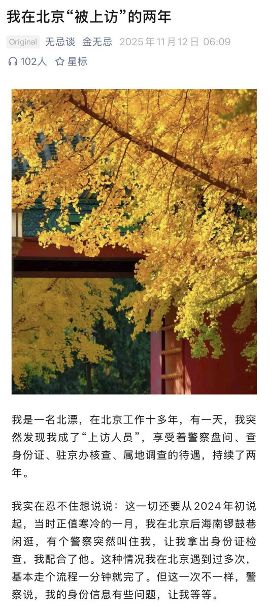
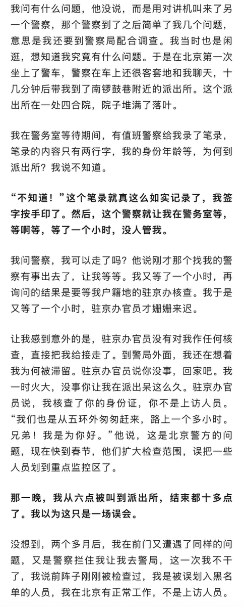
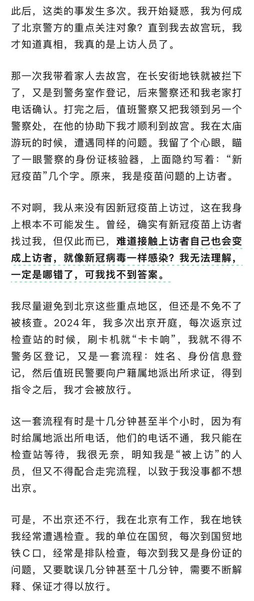
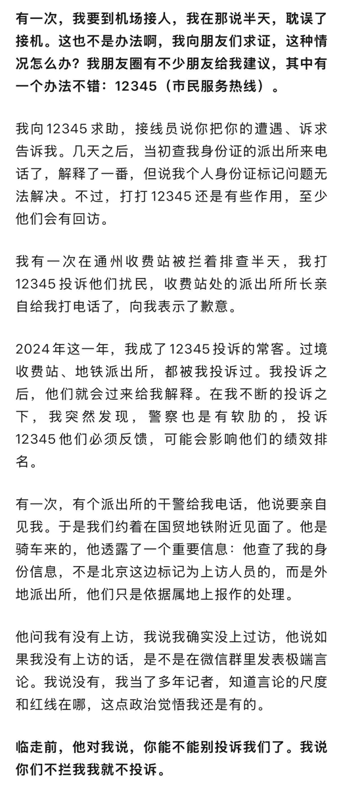

许白🔜广州
@xubai_01
RT @xiaojingcanxue: 这是一个很有意思的，能读懂中国的故事。
主角在北京工作，被系统错误的划成了来京上访人员。导致在北京的各个机场、火车站、法庭等工作常去地点寸步难行。每次都要查半个小时以上，查的结果都是搞错了，但查他的人又没有权限改。
于是他只能不停的投…




小径残雪
@xiaojingcanxue
这是一个很有意思的，能读懂中国的故事。
主角在北京工作，被系统错误的划成了来京上访人员。导致在北京的各个机场、火车站、法庭等工作常去地点寸步难行。每次都要查半个小时以上，查的结果都是搞错了，但查他的人又没有权限改。
于是他只能不停的投诉，最终他真的成了一名上访人员。/1 https://t.co/xnoEPd7Oj9